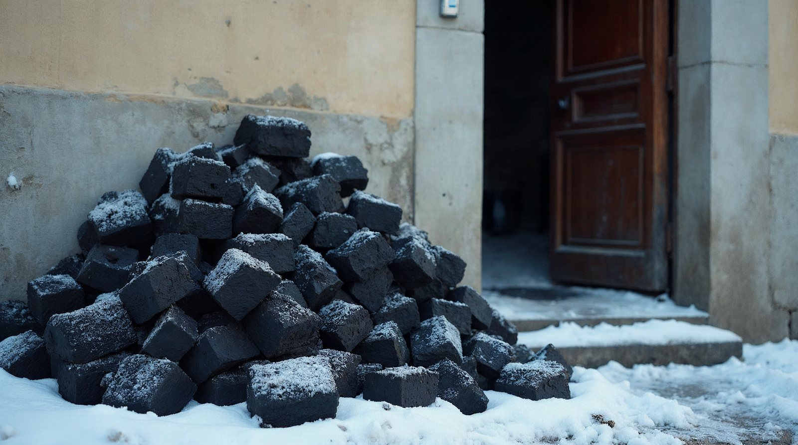
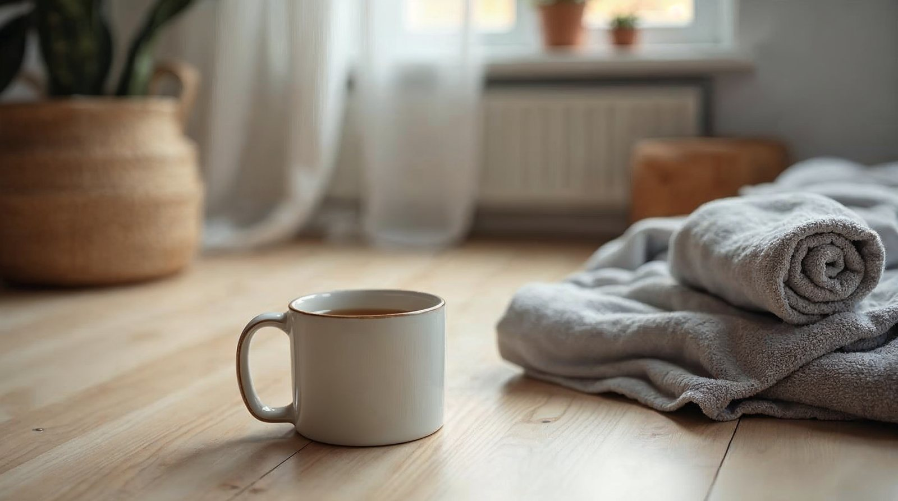
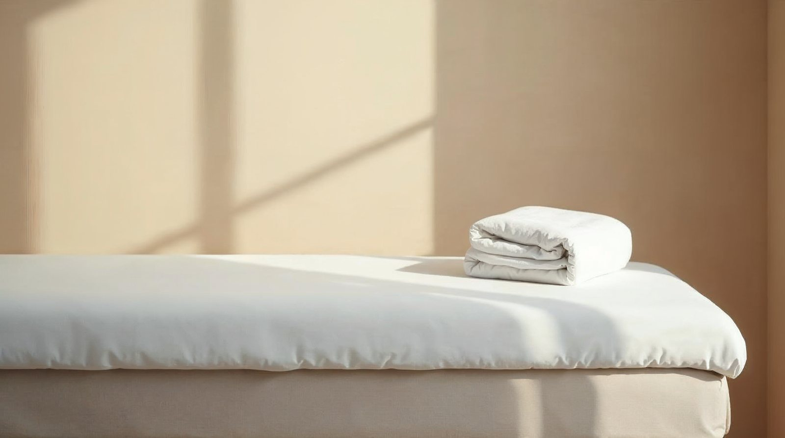
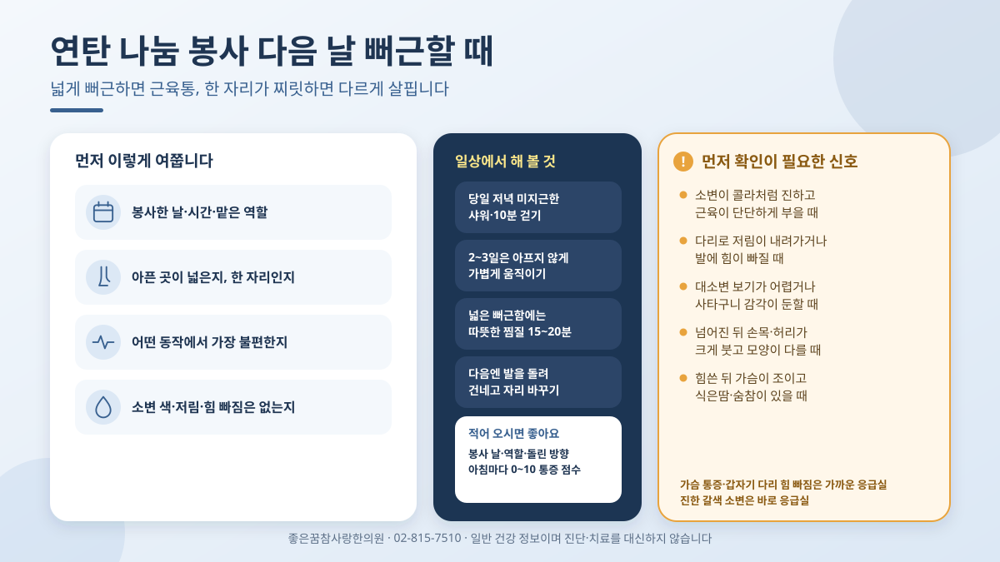

이종호 한의사 감수좋은꿈참사랑한의원 대표원장 (한의사 면허번호 19769)발행 2026-11-25 · 수정 2026-11-25
이 글의 차례
연말이면 회사나 교회, 학교, 동호회에서 연탄 나눔 봉사에 함께하는 분이 많습니다. 차가 들어가지 못하는 언덕 골목에서는 사람들이 한 줄로 서서 연탄을 손에서 손으로 건네거나, 지게에 몇 장씩 지고 비탈과 계단을 오르내리며 집집마다 날라 쌓습니다.
연탄은 한 장에 3kg이 넘고, 몇 시간 동안 수백 번 받고 돌아서 건네는 동작이 이어지기 때문에, 평소 책상 앞에서 일하던 분이라면 다음 날 아침이나 이틀째에 허리 옆과 팔뚝, 손목, 어깨, 허벅지 앞쪽이 한꺼번에 뻐근해지는 일이 흔합니다.
이렇게 넓게 퍼진 뻐근함은 대개 안 쓰던 근육을 오래 쓴 뒤 생기는 근육통으로, 2~3일 동안 아프지 않은 범위에서 가볍게 움직이고 따뜻하게 쉬며 잠을 충분히 자면 차츰 가라앉는 경우가 많습니다.
다만 연탄을 받다 허리를 비트는 순간 한 자리가 '뚝' 하며 찌릿했거나, 다리로 저림이 내려가거나, 손목이 붓고 힘이 빠지는 경우는 근육통과 다르게 살펴야 합니다. 특히 온몸 근육이 심하게 아프고 붓는데 소변이 콜라처럼 진한 갈색으로 나온다면 지켜보지 말고 바로 응급실에서 확인을 받아야 합니다.
왜 연탄을 나르고 나면 허리와 손목, 어깨가 함께 뻐근할까요
- 줄 서서 건네기: 옆 사람에게서 연탄을 받아 반대쪽 사람에게 넘길 때마다 허리를 비틀고 살짝 굽혔다 폅니다. 서너 시간 동안 수백 번 같은 방향으로 몸통을 돌리면 허리 옆과 옆구리 근육, 허리뼈 사이 작은 관절에 한쪽 방향의 부담이 쌓입니다.
- 연탄 쥐기: 연탄은 손잡이가 없어 손가락을 벌려 모서리를 감싸 쥐고 손목을 살짝 굽힌 채 버팁니다. 코팅 장갑이 미끄러우면 놓치지 않으려 더 세게 쥐게 되어 팔뚝 안쪽의 손목 굽히는 근육, 팔꿈치 안쪽 힘줄, 엄지 쪽 손목에 부담이 갑니다.
- 팔 뻗어 받기: 줄 간격이 넓으면 팔을 몸에서 멀리 뻗어 받게 됩니다. 같은 무게라도 몸에서 멀어질수록 어깨와 허리가 버텨야 하는 힘은 커집니다.
- 지게와 등짐: 지게에 연탄을 여러 장 지고 비탈을 오르면 허리와 엉덩이, 허벅지가 일하고, 계단을 내려올 때는 무릎 앞과 허벅지 앞 근육이 몸무게와 짐 무게를 함께 받아 내며 브레이크 역할을 합니다. 이렇게 근육이 늘어나면서 버티는 동작은 다음 날 근육통을 특히 크게 남깁니다.
- 추운 아침: 이른 아침 찬 공기 속에서 몸이 덜 풀린 채 시작하고, 중간에 땀이 났다가 쉬는 동안 식으면 근육이 다시 굳습니다.
- 마음이 앞섬: 좋은 일을 한다는 마음에 쉬자는 말을 꺼내기 어렵고, 줄의 흐름을 끊지 않으려 아파도 계속하게 됩니다.
- 근육통이 찾아오는 시간: 평소 쓰지 않던 근육을 오래 쓰면 하루쯤 지나 뻐근함이 올라오고 이틀째 무렵 가장 심했다가 며칠에 걸쳐 줄어드는 경우가 많습니다. 그래서 봉사 당일 저녁에는 괜찮다가 다음 날 아침에 놀라는 분이 많습니다.
- 한의학에서는 『황제내경』의 오래 걸으면 근을 상한다(久行傷筋)는 말처럼 한 가지 일을 오래 이어 갈 때의 부담을 설명하고, 땀이 난 뒤 찬 기운이 근육과 경락에 스며들면 기혈의 흐름이 막혀 뻐근하고 무거운 통증이 생긴다고 봅니다.
근육통과 다친 것은 이렇게 나눠 봅니다
- 넓게 뻐근하고 양쪽이 비슷하며, 움직이기 시작할 때 뻣뻣하다가 몸이 데워지면 조금 풀린다면 안 쓰던 근육을 쓴 뒤의 근육통일 가능성이 큽니다. 대개 하루 이틀째 가장 심하고 3~5일에 걸쳐 줄어듭니다.
- 손가락 하나로 짚을 수 있는 한 자리가 아프고, 특정 동작에서 찌릿하며, 다친 순간을 기억한다면 근육이나 인대가 놀란 것(염좌)일 수 있습니다. 이때는 그 동작을 며칠 피합니다.
- 손목이나 팔꿈치 안쪽이 물건을 쥐거나 비틀 때만 시큰하고 일주일이 지나도 그대로라면 힘줄에 부담이 남은 경우를 생각합니다.
- 엉덩이에서 다리로 저림이 내려가거나, 손가락이 저리고 힘이 빠진다면 신경이 눌린 신호일 수 있어 근육통으로 넘기지 않습니다.
- 근육이 단단하게 붓고 손대기 어려울 만큼 아프며, 소변이 진한 갈색으로 나온다면 근육이 크게 손상되어 근육 성분이 핏속으로 흘러나온 상태(횡문근융해)일 수 있습니다. 드물지만 콩팥에 부담을 줄 수 있어 바로 응급실로 갑니다.

먼저 이렇게 여쭙니다
- 봉사한 날과 시간, 줄에서 건네는 일을 했는지, 지게를 졌는지, 연탄을 쌓는 일을 했는지 여쭙니다.
- 줄에서 주로 어느 쪽에서 받아 어느 쪽으로 넘겼는지, 몸을 돌리는 방향이 한쪽으로 정해져 있었는지 여쭙니다.
- 아픈 곳이 양쪽에 넓게 퍼져 있는지, 한 자리를 짚을 수 있는지, 바로 아팠는지 다음 날부터 아팠는지 여쭙니다.
- 허리를 숙이거나 비틀 때, 물건을 쥐거나 병뚜껑을 열 때, 계단을 내려갈 때처럼 어떤 동작에서 가장 불편한지 여쭙니다.
- 다리나 손가락 저림, 힘 빠짐, 소변 색과 양의 변화가 있는지 여쭙니다.
- 미끄러지거나 넘어진 일, 연탄에 손이나 발을 찧은 일이 있었는지 여쭙니다.
- 평소 운동량과 하는 일, 예전 허리·손목·무릎 병력, 혈액을 묽게 하는 약이나 당뇨약 같은 복용 약을 여쭙니다.
- 봉사 전날 잠과 아침 식사, 봉사 중 물을 마셨는지도 함께 여쭙니다.

일상에서 먼저 해 볼 수 있는 것
봉사 당일 저녁
- 집에 오면 땀에 젖은 옷부터 갈아입고, 미지근한 물로 샤워해 몸을 데웁니다. 너무 뜨거운 물에 오래 있으면 오히려 지칠 수 있어 10~15분 정도로 합니다.
- 저녁 식사 뒤 10~15분 천천히 걸어 굳으려는 다리와 허리를 풀어 줍니다.
- 물을 평소보다 몇 컵 더 나눠 마시고, 저녁에는 두부나 달걀, 생선처럼 단백질이 든 반찬을 곁들입니다.
- 봉사를 마친 뒤 뒤풀이가 있더라도 술은 한두 잔에서 멈춥니다. 술은 몸의 물을 빼앗고 잠을 얕게 해 근육이 회복되는 시간을 늦춥니다.
- 평소보다 30분~1시간 일찍 잠자리에 듭니다.
다음 날부터 2~3일
- 아프다고 하루 종일 누워 있기보다, 아프지 않은 범위에서 집 안을 걷고 가벼운 집안일을 하며 움직입니다. 몸을 움직여야 굳은 근육에 피가 돌아 뻐근함이 빨리 줄어드는 편입니다.
- 넓게 뻐근한 곳에는 따뜻한 찜질을 15~20분, 하루 두세 번 합니다. 한 자리가 붓고 화끈거린다면 처음 하루 이틀은 수건으로 싼 얼음주머니를 10~15분 대는 편이 편할 수 있습니다.
- 아픈 근육을 세게 주무르거나 마사지건으로 세게 두드리지 않습니다. 근육통이 심한 시기에는 손바닥으로 살살 쓸어 주는 정도에서 멈춥니다.
- 손목이 시큰하면 무거운 냄비나 장바구니를 한 손으로 들지 않고 두 손으로 받쳐 들며, 걸레를 비틀어 짜는 일을 며칠 줄입니다.
- 계단을 내려갈 때 허벅지 앞과 무릎이 아프면 난간을 잡고 한 칸씩 천천히 내려가거나 엘리베이터를 씁니다.
- 헬스나 달리기처럼 힘든 운동은 뻐근함이 대부분 가라앉을 때까지 미루고, 걷기 정도로 대신합니다.
3일째 이후 가볍게 풀기
- 허리 옆 늘이기: 서서 한 손을 머리 위로 올리고 반대쪽으로 몸을 살며시 기울여 15초 머뭅니다. 양쪽 세 번씩 합니다.
- 무릎 당기기: 바로 누워 한쪽 무릎을 두 손으로 감싸 가슴 쪽으로 당겨 15초 머뭅니다.
- 팔뚝 안쪽 늘이기: 팔을 앞으로 뻗어 손바닥이 앞을 보게 한 뒤, 반대 손으로 손가락을 살며시 몸 쪽으로 당겨 15초 머뭅니다.
- 허벅지 앞 늘이기: 벽을 짚고 서서 한쪽 발목을 잡아 엉덩이 쪽으로 살며시 당겨 15초 머뭅니다. 균형이 불안하면 옆으로 누워서 합니다.
- 모든 동작은 당기는 느낌까지만 하고, 찌릿하거나 저린 느낌이 들면 멈춥니다.
다음 봉사 때 바꿔 볼 것
- 전날 일찍 자고, 아침은 든든하게 먹고 나갑니다. 빈속으로 찬 공기 속에서 힘을 쓰면 어지럼이 생기기 쉽습니다.
- 손바닥 쪽이 코팅된 장갑과 미끄럼을 막는 밑창의 신발을 챙기고, 겉옷 안에 벗고 입기 쉬운 얇은 옷을 겹쳐 입습니다. 연탄 가루가 날리니 마스크도 챙깁니다.
- 시작 전 5분 동안 허리 돌리기, 무릎을 반쯤 굽혔다 펴기, 손목 돌리기로 몸을 데웁니다.
- 줄에서는 옆 사람과 간격을 좁혀 팔을 쭉 뻗지 않아도 받을 수 있게 섭니다. 받을 때는 허리만 돌리지 말고 발을 함께 돌려 몸 전체가 방향을 바꾸게 합니다.
- 연탄은 배꼽 높이에서 몸 가까이 붙여 받고, 낮은 곳에서 받을 때는 허리를 숙이기보다 무릎을 굽힙니다.
- 20~30분마다 줄에서 서는 쪽을 바꿔, 몸을 돌리는 방향이 한쪽으로만 쌓이지 않게 합니다. 지게를 지는 역할과 줄 서는 역할도 번갈아 맡습니다.
- 지게에는 자기 체력에 맞는 장수만 지고, 계단을 내려올 때는 보폭을 줄여 천천히 걷습니다.
- 쉬는 시간마다 물을 마시고, 땀이 식기 전에 겉옷을 걸칩니다.
상황별 예시
- 예를 들어 회사 단체 봉사로 세 시간 동안 줄 가운데에 서서 오른쪽에서 받아 왼쪽으로 넘기는 일을 한 30대 사무직이, 다음 날 아침 양쪽 허리 옆과 팔뚝이 넓게 뻐근하고 이틀째 가장 심했다가 사흘째부터 덜해지는 경우는 안 쓰던 근육을 쓴 뒤의 근육통에 가깝습니다. 출근길에 한 정거장 먼저 내려 걷고, 저녁에 따뜻하게 씻은 뒤 허리 옆 늘이기를 해 봅니다.
- 예를 들어 지게를 지고 비탈 계단을 수십 번 오르내린 50대가 이틀째 허벅지 앞과 무릎 앞이 당겨 계단을 내려가기 힘든 경우, 며칠은 난간을 잡고 한 칸씩 내려가며 허벅지 앞 늘이기를 합니다. 일주일이 지나도 무릎이 붓거나 계단에서 무릎이 꺾이는 느낌이 있다면 무릎 상태를 확인해 봅니다.
- 예를 들어 연탄을 받다 허리를 비튼 순간 한쪽이 '뚝' 하며 찌릿하고, 그 뒤로 허리를 숙이거나 돌아누울 때마다 같은 자리가 아픈 경우는 근육통보다 근육이나 인대가 놀란 경우에 가깝습니다. 무거운 것을 들거나 비트는 동작을 며칠 피하고, 다리 저림이 없는지 살피며 진료를 받아 봅니다.
- 예를 들어 평소 운동을 거의 하지 않던 대학생이 처음 봉사에 나가 쉬지 않고 다섯 시간을 일한 뒤, 다음 날 허벅지와 팔이 단단하게 붓고 만지기 힘들 만큼 아프며 소변이 진한 갈색으로 나온 경우에는 근육통으로 여기지 말고 바로 응급실에 갑니다.
자주 하는 오해
- 근육통은 운동으로 풀어야 한다며 다음 날 헬스장에서 더 세게 운동하는 분이 있습니다. 근육통이 심한 시기에는 가볍게 움직이는 정도가 회복에 더 편하고, 강한 운동은 가라앉은 뒤에 합니다.
- 아플수록 세게 주물러야 풀린다고 여기기 쉽지만, 이미 지친 근육을 세게 누르면 뻐근함이 더 오래 가기도 합니다.
- 좋은 일을 하는 자리이니 아파도 참고 끝까지 해야 한다고 생각하는 분이 많습니다. 아프거나 어지러우면 줄에서 잠시 빠져 쉬는 것이 함께하는 사람들에게도 더 안전합니다.
- 파스를 붙이면 괜찮다고 여기기 쉽지만, 통증이 덜 느껴지는 것과 근육이 회복된 것은 다릅니다. 피부가 붉어지거나 가려우면 떼고, 같은 자리에 하루 종일 붙여 두지 않습니다.
- 젊으니 준비운동은 필요 없다고 여기기 쉽지만, 추운 아침에는 나이와 상관없이 몸이 덜 풀린 채 시작하게 됩니다.
스스로 점검해 보세요
- 줄에서 늘 같은 방향으로 몸을 돌려 건넸다.
- 옆 사람과 간격이 넓어 팔을 쭉 뻗어 받았다.
- 허리를 숙여 낮은 곳에서 연탄을 받거나 내려놓은 일이 많았다.
- 두 시간 넘게 쉬지 않고 일했다.
- 평소 운동을 거의 하지 않는다.
- 아픈 곳이 넓게 퍼져 있지 않고 한 자리를 짚을 수 있다.
- 뻐근함이 사흘째에도 줄지 않거나 오히려 심해진다.
마지막 두 항목에 해당하면 근육통만으로 보기 어려울 수 있어 상담을 받아 보세요.

한의원에서 함께 살필 수 있는 경우
- 사흘이 지나도 뻐근함이 줄지 않거나 오히려 심해지는 경우
- 허리를 비틀다 다친 뒤 같은 자리가 계속 찌릿하고 돌아눕기 힘든 경우
- 손목이나 팔꿈치 안쪽이 쥐는 동작마다 시큰해 일주일 넘게 이어지는 경우
- 계단을 내려갈 때 무릎 앞 통증이 일주일 넘게 남는 경우
- 해마다 겨울 봉사나 대청소 같은 큰일 뒤에 같은 자리가 반복해서 아픈 경우
좋은꿈참사랑한의원에서는 첫 방문 때 봉사하던 날의 역할과 시간, 아프기 시작한 때와 가장 불편한 동작을 먼저 차례로 여쭙습니다. 그다음 맥부터 짚어 보고, 혀와 배를 함께 살펴 몸이 지쳐 있는지, 찬 기운이 남아 있는지, 잠과 소화는 어떤지 확인합니다.
이어 허리를 앞뒤 옆으로 굽히고 돌릴 때의 움직임, 손목과 손가락에 힘을 줄 때의 통증, 계단 동작에서 무릎의 움직임을 차례로 보고, 다리와 손의 감각과 힘을 함께 살핍니다. 손목이나 팔꿈치 힘줄, 근육 상태를 더 보아야 할 때는 초음파로 아픈 쪽과 반대쪽을 비교해 보기도 합니다.
그 결과에 따라 침과 뜸, IS400을 이용한 온열 치료 등을 상의하고, 허리와 골반의 움직임이 한쪽으로 굳어 있다면 추나요법이 맞을지 함께 이야기합니다. 몇 주 넘게 이어지는 힘줄 통증이라면 체외충격파(제우스·한일티엠)를 고려할지 상의하며, 장비마다 맞는 부위와 주의할 점이 달라 미리 여쭙습니다.
건강보험 적용이나 비용, 방문 간격은 방문 전 전화로 확인해 주세요. 신경이 눌린 신호나 뼈를 다쳤을 가능성이 보이면 영상 검사가 가능한 병원 진료를 먼저 권해 드립니다. 다시 오시면 지난번 정한 쉬는 방법과 풀기 동작을 해 보셨는지, 어떤 동작에서 아직 불편한지를 이어서 여쭙습니다.
얼마나 지켜보고 언제 상담할까요
- 넓게 퍼진 근육통은 대개 하루 이틀째 가장 심하고 3~5일 사이에 차츰 가라앉습니다. 매일 아침 0~10 점수로 적어 보면 줄어드는 흐름이 보입니다.
- 일주일이 지나도 같은 자리가 그대로이거나, 점수가 줄다가 다시 올라간다면 상담을 받아 보세요.
- 한 자리가 찌릿한 염좌는 무리한 동작을 피하며 1~2주 지켜보되, 돌아눕기나 걷기가 힘들 만큼 아프면 기다리지 않고 진료를 받습니다.
- 진료 시간은 평일 09:30~20:00(점심 13:00~14:00), 토·일·공휴일 09:30~15:00(점심시간 없음)이라 봉사를 다녀온 주말에도 들를 수 있습니다. 접수 마감 시각은 방문 전 전화로 확인해 주세요.
- 아래 신호가 있으면 지켜보지 말고 먼저 진료를 받습니다.
이렇게 기록해 오시면 상담이 쉬워집니다
- 봉사한 날짜와 시간, 맡은 역할(줄에서 건네기, 지게, 쌓기)과 대략 나른 양
- 줄에서 받은 쪽과 넘긴 쪽, 몸을 돌린 방향
- 아픈 자리를 표시한 그림과 날마다 아침의 0~10 통증 점수
- 가장 불편한 동작 세 가지
- 소변 색과 양의 변화, 저림이나 힘 빠짐이 있었는지
- 복용 중인 약과 예전 허리·손목·무릎 병력
이런 증상은 먼저 확인이 필요합니다
- 근육이 단단하게 붓고 만지기 힘들 만큼 아프며, 소변이 콜라처럼 진한 갈색이거나 양이 크게 줄어든 경우
- 엉덩이에서 다리로 저림이 내려가거나, 발목이나 발가락에 힘이 빠지는 경우
- 소변이나 대변을 보기 어렵거나 참기 어려워지고, 사타구니 주변 감각이 둔해진 경우
- 미끄러지거나 넘어진 뒤 손목이나 허리가 크게 붓고 모양이 달라 보이거나, 골다공증이 있는 경우
- 손가락이 저리고 물건을 자꾸 떨어뜨릴 만큼 힘이 빠지는 경우
- 힘을 쓴 뒤 가슴이 조이듯 아프거나 답답하고, 숨이 차고 식은땀이 나는 경우
가슴 통증이나 답답함이 팔과 턱으로 번지고 식은땀이 나거나, 다리에 갑자기 힘이 빠져 서기 어렵다면 지체하지 말고 가까운 응급실로 가세요. 소변 색이 진한 갈색으로 변하고 근육이 심하게 아프다면 기다리지 말고 응급실로 갑니다. 복용 중인 약은 처방한 의사와 상의 없이 끊지 않습니다.
관련 글
- 눈 온 다음 날 집 앞 눈을 치운 뒤 허리와 어깨가 결릴 때는 어떻게 하나요?
- 장바구니를 들고 언덕길을 오르고 나면 손목과 팔꿈치가 시큰할 때는 어떻게 살피나요?
- 근육이 아픈 것인지 관절이 아픈 것인지 어떻게 짚어서 말하나요?

여쭙는 것
- 봉사한 날과 시간, 줄에서 건네는 일을 했는지, 지게를 졌는지, 연탄을 쌓는 일을…
- 줄에서 주로 어느 쪽에서 받아 어느 쪽으로 넘겼는지, 몸을 돌리는 방향이 한쪽으로…
- 아픈 곳이 양쪽에 넓게 퍼져 있는지, 한 자리를 짚을 수 있는지, 바로 아팠는지 다…
생활에서 해 볼 것
- 집에 오면 땀에 젖은 옷부터 갈아입고, 미지근한 물로 샤워해 몸을 데웁니다. 너무…
- 저녁 식사 뒤 10~15분 천천히 걸어 굳으려는 다리와 허리를 풀어 줍니다.
- 물을 평소보다 몇 컵 더 나눠 마시고, 저녁에는 두부나 달걀, 생선처럼 단백질이 든…
한의원에서 함께 살필 것
- 사흘이 지나도 뻐근함이 줄지 않거나 오히려 심해지는 경우
- 허리를 비틀다 다친 뒤 같은 자리가 계속 찌릿하고 돌아눕기 힘든 경우
- 손목이나 팔꿈치 안쪽이 쥐는 동작마다 시큰해 일주일 넘게 이어지는 경우
먼저 확인이 필요한 신호
- 근육이 단단하게 붓고 만지기 힘들 만큼 아프며, 소변이 콜라처럼 진한 갈색이거나 양…
- 엉덩이에서 다리로 저림이 내려가거나, 발목이나 발가락에 힘이 빠지는 경우
- 소변이나 대변을 보기 어렵거나 참기 어려워지고, 사타구니 주변 감각이 둔해진 경우
한눈에 보는 표
| 구분 | 핵심 |
|---|---|
| 여쭙는 것 | 봉사한 날과 시간, 줄에서 건네는 일을 했는지, 지게를 졌는지, 연탄을 쌓는 일을 했는지 여쭙니다. 줄에서 주로 어느 쪽에서 받아 어느 쪽으로 넘겼는지, 몸을 돌리는 방향이 한쪽으로 정해져 있었는지 여쭙니다. |
| 생활에서 해 볼 것 | 집에 오면 땀에 젖은 옷부터 갈아입고, 미지근한 물로 샤워해 몸을 데웁니다. 너무 뜨거운 물에 오래 있으면 오히려 지칠 수 있어 10~15분 정도로 합니다. 저녁 식사 뒤 10~15분 천천히 걸어 굳으려는 다리와 허리를 풀어 줍니다. |
| 한의원에서 함께 살필 것 | 사흘이 지나도 뻐근함이 줄지 않거나 오히려 심해지는 경우 허리를 비틀다 다친 뒤 같은 자리가 계속 찌릿하고 돌아눕기 힘든 경우 |
| 먼저 확인이 필요한 신호 | 근육이 단단하게 붓고 만지기 힘들 만큼 아프며, 소변이 콜라처럼 진한 갈색이거나 양이 크게 줄어든 경우 엉덩이에서 다리로 저림이 내려가거나, 발목이나 발가락에 힘이 빠지는 경우 |
자주 묻는 질문
봉사 다음 날보다 이틀째가 더 아픈데 괜찮은 건가요?
안 쓰던 근육을 오래 쓴 뒤의 근육통은 하루쯤 지나 올라와 이틀째 무렵 가장 심한 경우가 많습니다. 사흘째부터 줄어드는 흐름이면 지켜보고, 일주일이 지나도 그대로이거나 한 자리가 찌릿하면 상담을 받아 보세요.
따뜻한 찜질과 얼음찜질 가운데 무엇을 하나요?
넓게 뻐근한 근육통에는 따뜻한 찜질이 편한 경우가 많습니다. 다친 순간이 있고 한 자리가 붓고 화끈거린다면 처음 하루 이틀은 수건으로 싼 얼음주머니를 10~15분 대 보세요. 어느 쪽이든 피부에 직접 대지 않습니다.
진통제를 먹고 다시 봉사에 나가도 되나요?
진통제로 아픔이 덜 느껴져도 근육은 아직 회복 중일 수 있습니다. 뻐근함이 대부분 가라앉은 뒤에 나가고, 위장이 약하거나 혈액을 묽게 하는 약을 드시는 분은 진통제를 고르기 전에 약사나 의사와 상의하세요.
손목이 시큰한데 보호대를 해도 되나요?
쥐는 동작을 해야 할 때 잠깐 쓰면 도움이 될 수 있지만, 너무 조이면 손이 저릴 수 있어 손가락 색과 감각을 확인하고 잘 때는 풉니다. 일주일 넘게 시큰함이 이어지면 힘줄 상태를 살펴봅니다.
연탄 가루를 마셔서 그런지 목이 칼칼하고 기침이 나요.
가루가 날리는 곳에 오래 있으면 목과 코가 따갑고 기침이 날 수 있어, 미지근한 물로 입을 헹구고 물을 자주 마셔 보세요. 기침이 2주 넘게 이어지거나 숨이 차고 열이 나면 진료를 받습니다.
좋은꿈참사랑한의원은 재진 때 지난번 이야기부터 이어서 여쭙니다. 진료시간과 예약은 오시는 길에서 확인하세요.
어디서 상담받을 수 있나요?
좋은꿈참사랑한의원은 서울 동작구 만양로2길 2 신성빌딩 3층·5층(서울 동작구 상도동, 7호선 상도역 3번 출구 근처)에 있습니다. 한의사 3명(이종호 대표원장, 조영기 수석진료원장, 정원영 진료원장)이 진료합니다. 진료시간은 평일 09:30~20:00(점심 13:00~14:00), 토·일·공휴일 09:30~15:00이며, 방문 전 전화로 확인을 권합니다. 예약은 네이버 예약, 카카오톡 상담, 전화 02-815-7510로 받습니다.
이 글은 일반적인 건강 정보이며 개인의 진단이나 치료를 대신하지 않습니다. 증상이 있거나 복용 중인 약이 있다면 진료를 통해 확인하세요. 치료 효과는 개인마다 다를 수 있습니다.
작성 기준: 일반적으로 알려져 있는 건강 정보를 참고해 정리했습니다(대표원장 감수). 증상 기록은 1~2주 동안 하루 1회, 비슷한 시간에 적어 오시면 지난 상태와 비교하기 쉽습니다.